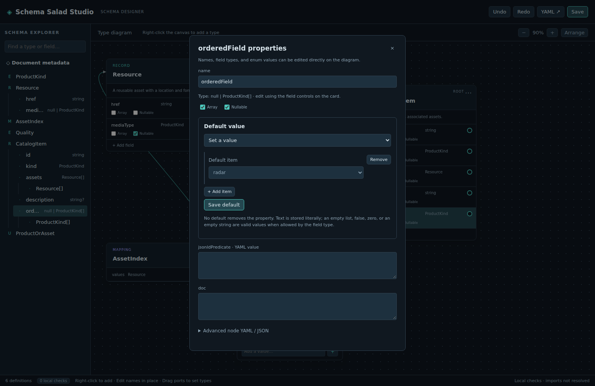

Set a field default
Use this procedure when a record field needs an explicit default. Start with a schema containing a field, such as Asset.kind from the first-schema tutorial.
- Right-click the field and choose Properties….
- Under Default value, choose Set a value.
- Enter a value using the control for the field's type. For
Asset.kind, chooseimagefrom the enum dropdown. - Click Save default to commit the value, then save the document normally.

To remove a default, choose No default and click Save default. To use a null default, make the field nullable and choose Null when offered. No default, null, empty text, false, zero, and an empty list are distinct values.
If you change a field's type and its existing default becomes incompatible, the editor preserves the value and reports the problem in local checks. Reopen the default form to correct or remove it.
See the field and default-value reference for supported controls, nesting, and validation limits.